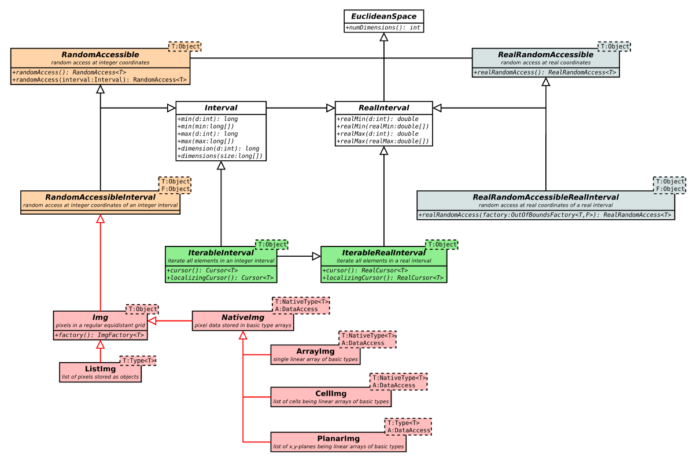

Changes from ImgLib1 to ImgLib2
the content of this page has not been vetted since shifting away from MediaWiki. If you’d like to help, check out the how to help guide!
At the Madison hackathon, quite a lot has been done about design issues of the originally published ImgLib (which was already the 6th generation). Unfortunately, these improvements were not possible in a fully backwards-compatible manner.
Summary
- Image and Container are abandoned. In case that write access is required, use Img instead, otherwise an apropriate access interface as described below.
- The ImageOpener is renamed to now ImgOpener accordingly.
Where is the Image?
 ImgLib2 interfaces for data collections in n-dimensional Euclidean space. The key feature is distinction between random access vs. iteration and real vs. integer coordinate access.’%}
In ImgLib, the Image class was a wrapper for a limited subset of possible meta-data and a Container that provided access to the actual pixels. The overwhelming majority of methods in both Image and Container were almost identical. Furthermore, implementing algorithms for Image limited their portability to situations where different meta-data or less meta-data was required or different strategies for pixel access were appropriate.}
[Fig]]imglib2-data.png’ title=‘Fig. 1 ImgLib2 interfaces for data collections in n-dimensional Euclidean space. The key feature is distinction between random access vs. iteration and real vs. integer coordinate access.’%} In ImgLib, the Image class was a wrapper for a limited subset of possible meta-data and a Container that provided access to the actual pixels. The overwhelming majority of methods in both Image and Container were almost identical. Furthermore, implementing algorithms for Image limited their portability to situations where different meta-data or less meta-data was required or different strategies for pixel access were appropriate.
In ImgLib2, the Image class has been abandoned. Instead, there is a set of interfaces that describe how data elements (pixels) can be accessed. Fig. 2 shows a UML-diagram visualizing the interface inheritance graph. The most important interfaces are
- RandomAccessible, RealRandomAccessible
- IterableInterval, IterableRealInterval
Actual images that store pixels in a regular equidistant grid implement the Img interface that combines a reasonable subset of the above interfaces. The basic storage strategies like ArrayImg, CellImg, PlanarImg, ImagePlusImg or ListImg implement this interface and can be used directly without being wrapped into something else.
Opposed to the intuitive shortcut that you would just replace Image by Img then, we suggest to consider implementing algorithms for the type of pixel access that you actually need. Iterating and localizing all pixels is possible with IterableRealInterval or IterableInterval, random access comes from RandomAccessible and RealRandomAccessible. That is, the Img interface is almost always a too strict constraint for the possible input, but usually a good choice for writing the result.
Where is the LocalizableCursor?
{% include thumbnail src=‘imglib2-access.png’ title=‘Fig. 2 ImgLib2 interfaces for access to sample data and to real and integer coordinates in n-dimensional Euclidean space.’%} Iteration in ImgLib2 (as in ImgLib) implies constant and thus repeatable order. Therefore a Cursor can always localize itself, either by going the hard way and reasoning the position from it’s iteration index or by tracking the position per move. There is no extra interface required to distinguish this behavior but you can choose which Cursor to acquire by Iterable(Real)Interval.cursor() and Iterable(Real)Interval.localizingCursor(). Fig. 2 shows a UML-diagram visualizing the interface inheritance graph.
{% include clear%}
Where is the LocalizableByDimCursor?
The LocalizableByDimCursor was a combination of an iterator and random access. Combining these two concepts is a bad idea and so we split them. Random access is provided by classes implementing the interfaces RandomAccess or RealRandomAccess. You get them by RandomAccessible.randomAccess() or RealRandomAccessible.realRandomAccess() respectively. Fig. 2 shows a UML-diagram visualizing the interface inheritance graph.
How does ImgLib2 handle OutOfBounds?
Handling out of bounds behavior is invariant to data storage. We have therefore moved it into the final implementations ExtendedRandomAccessibleInterval and ExtendedRealRandomAccessibleRealInterval. The usage is trivial as follows:
ExtendedRandomAccessibleInterval< IntType, Img< IntType> > extendedInterval =
new ExtendedRandomAccessibleInterval< IntType, Img< IntType > >(
myIntImg,
new OutOfBoundsMirrorFactory< IntType, Img< IntType > >( Boundary.DOUBLE ) );
RandomAccess< IntType > randomAccess = extendedInterval.randomAccess();That way, out of boundary location handling is available for all Intervals that are compatible with the passed OutOfBoundsFactory (the existing work for all RandomAccessible & Interval).
A simple shortcut is to call:
RandomAccessible< IntType > interval = Views.extend( myIntImg,
new OutOfBoundsMirrorFactory< IntType, Img< IntType > >( Boundary.DOUBLE ) );For standard out of bounds strategies there are also static convenience methods:
/* Mirroring Strategy where the last pixel is the mirror */
RandomAccessible< IntType > interval = Views.extendMirrorSingle( myIntImg );
/* Mirroring Strategy where the mirror lies behind the last pixel */
RandomAccessible< IntType > interval = Views.extendMirrorDouble( myIntImg );
/* Strategy where periodicity of the space is assumed (like FFT) */
RandomAccessible< IntType > interval = Views.extendPeriodic( myIntImg );
/* Strategy that returns a constant value outside the boundaries */
RandomAccessible< IntType > interval = Views.extendValue( myIntImg, new IntType( 5 ) );They placed in the Views class because it is a special view onto an Img
Where did the NeighborhoodCursor and RegionOfInterestCursor go?
They have been removed and will be replaced by a slightly different concept that was not possible in ImgLib before due to lack of appropriate interfaces. Both Neighborhood and HyperBox will implement IterableInterval and/or RandomAccessible. They will be provided by an IterableInterval< Neighborhood > or RandomAccessible< HyperBox > respectively (plus other combinations, and real variants).
Where is the Chunk?
Chunk was introduced as a way for parallel processing of independent sections on iterable data. We have replaced it by IterableIntervalSubset which is an IterableInterval itself and thus can be used transparently in all implementations using IterableInterval.
Changes within ImgLib2
- ImgCursor has been removed for being empty—simply use Cursor instead
- The ImgOpener returns an ImgPlus, not an Img to store additional meta-data as retrieved through LOCI bioformats.